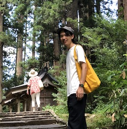

Research associate / EuroTechPostdoc Fellow
at
Transport and Mobility Laboratory,
École Polytechnique Fédérale de Lausanne
yuki.oyama[at]epfl.ch
+41 (0) 21 693 24 32
Yuki Oyama is a Research associate at École Polytechnique Fédérale de Lausanne. He completed his PhD in 2017 at The University of Tokyo, Japan. His interest lies in the relationship between human travel behavior and urban space. His main research works are route choice modeling, network traffic assignment, pedestrian activity modeling and optimal use of urban spaces.
スイス連邦工科大学(EPFL)にてResearch Associate，およびEuroTechPostdoc Fellowとして勤務． 2017年に東京大学で博士（工学）の学位を取得．主な関心は，都市空間と人間行動の関係性の理解とデザイン． 経路選択分析，交通ネットワーク配分，歩行者活動モデリング，都市空間の最適利用などの研究を行う．